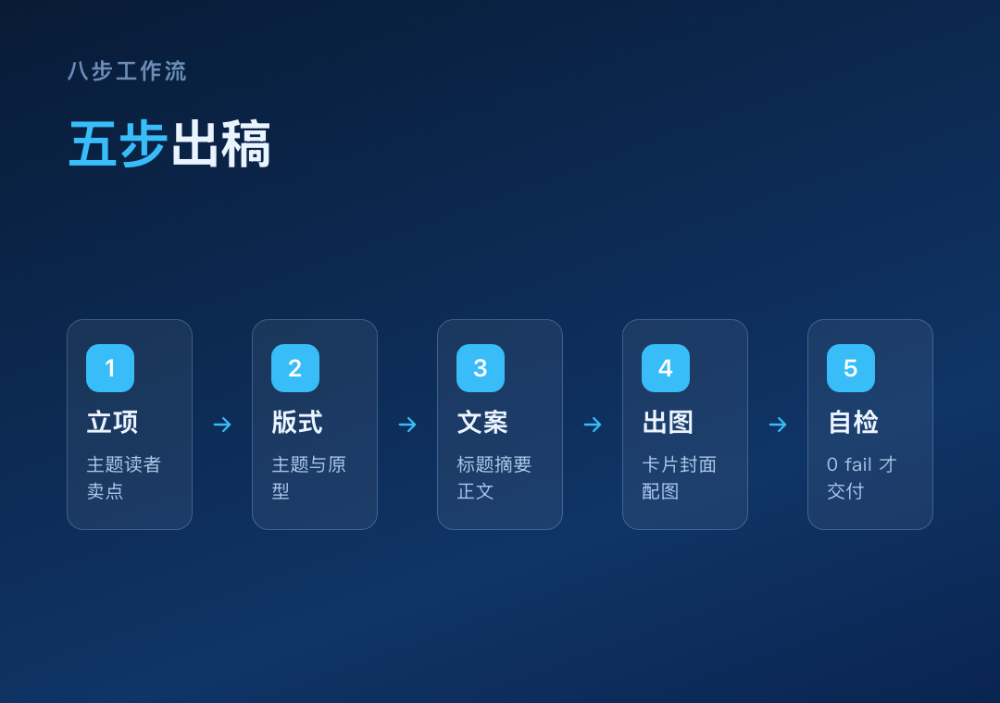
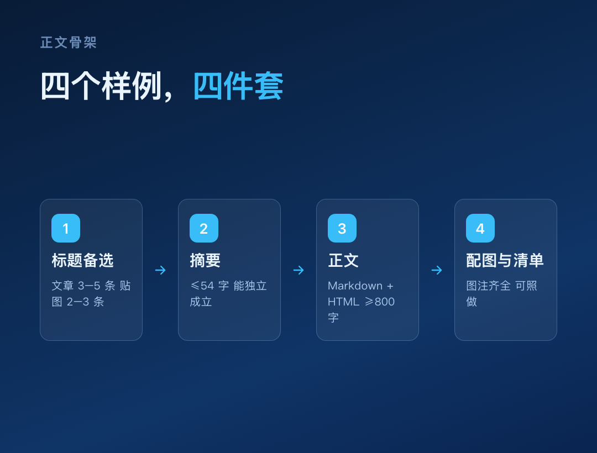
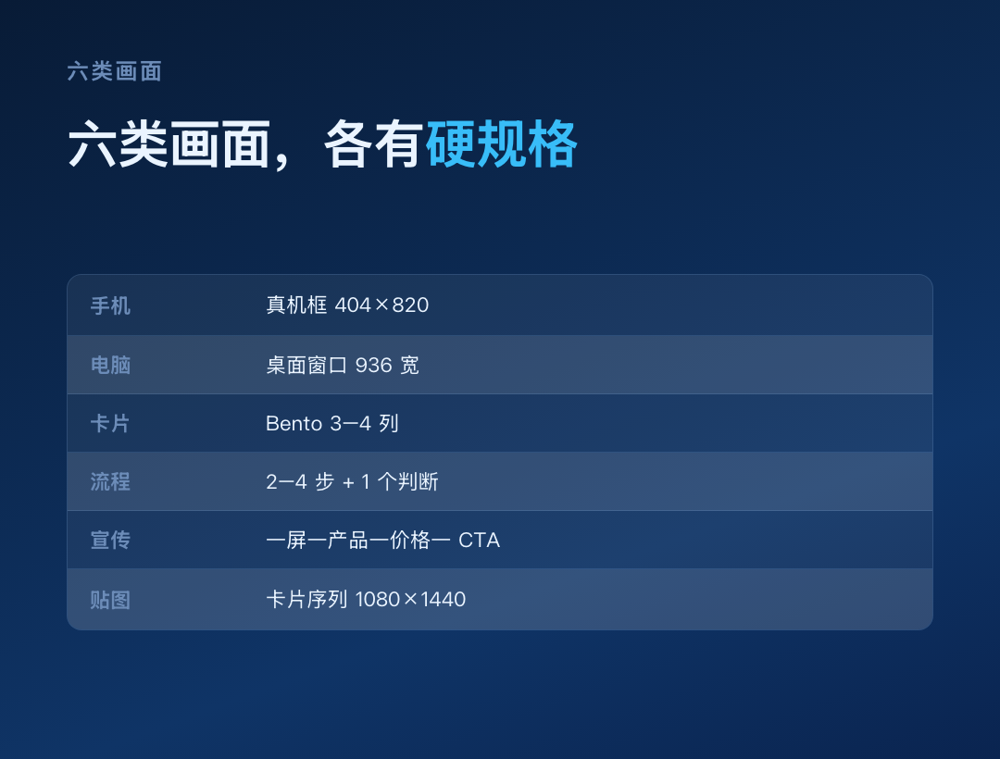
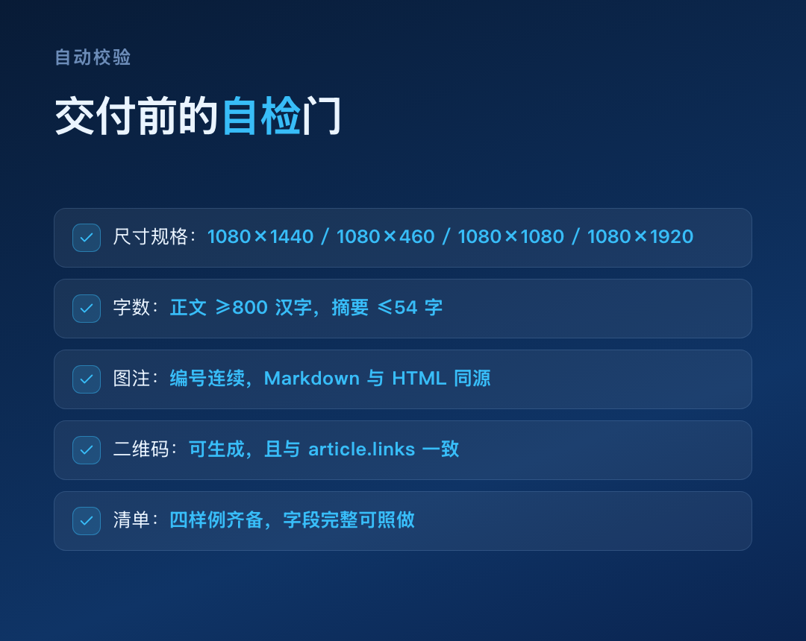

项目自述｜栏目「公众号内容工坊」｜事实据仓库源码与 README 整理
一条命令，把项目做成公众号：贴图、长文、视频号一次出齐
摘要：一次产出 2 版本 × 2 格式：贴图、长文、封面、视频号。规范先行，脚本出图，坏产物不交付。
本文目录 · 6 节
· 一、先说结论：它省下的是最后一公里
· 二、为什么是“规范先行，脚本出图”
· 三、一次调用，产出什么
· 四、六类画面风格，一套 spec 切换
· 五、自检清单：坏产物不交付
· 六、边界：它不能替你做什么
做公众号最耗时的，往往不是想清楚观点，而是把观点变成能发的样子：配图、封面比例、摘要字数、图注编号。
wechat-mp 是一套面向微信公众号的内容生产工具链，也是一个装在 Agent 里的技能（Skill）。你说一个主题，它产出贴图套图、图文长文，需要时再配一条视频号。
核心思路只有一句：规范先行，脚本出图。文案有公式，版式有设计系统，排版有格式规范，配图全部由 HTML 模板加无头 Chrome 渲染成 PNG。
这篇用它自己的文档和产物，讲清楚一次调用到底产出了什么，以及哪里它管不着。
一、先说结论：它省下的是最后一公里
选题、观点、风格，这些需要人判断；而比例、字号、安全区、图注编号、摘要字数，这些不需要判断，只需要执行到位。
wechat-mp 把后者固化下来：贴图固定 1080×1440，文章封面同时出 1080×460 与 1080×1080 两版，正文配图宽 1080、高 560–1440，视频号封面 1080×1920。
这些数字不是约定俗成的口号，而是写在规范和脚本里的硬约束。想改其中的任何一个，都要先改规范和模板，而不是靠某一次手工微调。

图1：一次调用的主干步骤，每一步都有完成标准。
二、为什么是“规范先行，脚本出图”
AI 写作最大的问题不是写不出来，而是每次写出来的样子都不一样：这次圆角大一点，下次标题小一点，换个人再生成就变成另一套风格。
所以这个项目没有把重点放在“生成好看的图”，而是放在“让同一种图可以稳定复现”。颜色、字号、间距一律取 assets/tokens.css 里的令牌，组件不写魔法值；卡片原型只有十种，每个原型只表达一种信息。
另一条同样重要：内容与版式分离。文案写在 spec.json 里，版式由模板和脚本负责。想换一套主题、换一种语气，改的是 spec，而不是重写二十个 HTML。
三、一次调用，产出什么
默认交付是 2 个版本 × 2 种格式，共 4 个公众号样例：深色科技版与浅色清新版的贴图，以及同样两个版本的长文。
每个版本文件夹里，贴图是 5–9 张 3:4 卡片加逐图文案脚本；文章是不少于 800 字（建议 1500–3000）的 Markdown 正文、内联样式 HTML、两张封面与 3–5 张正文配图。
两版共用同一份事实，只换视觉主题与语气，便于 A/B 选型；但两版不是换皮，结构至少要有几处不同，只换配色算不合格。
标题要备 3–5 条并标出推荐项，摘要压在 54 字以内——这是微信分享卡片的上限，超过就会被截断。

图2：每个样例都要带齐的四件交付物。
四、六类画面风格，一套 spec 切换
贴图不只有一种样子。项目内置六类画面风格：手机真机框、桌面窗口、Bento 卡片墙、判断流程图、产品宣传海报，以及纯贴图卡片序列。
每一类都有硬规格：手机框 404×820，桌面窗口 936 宽，流程图 936 宽且限定 2–4 步加一个判断，Bento 3–4 列，宣传图一屏只放一个产品、一个价格、一个 CTA。
选定画面风格只是第一步，更关键的是按题材路由：新版本走发布骨架，横评走对比，原理走图解，复盘走数据。风格要从题材里长出来，而不是套模板。
配套的是 20 套主题令牌，从深色科技到米色图解各有气质；换主题只改令牌，不改组件。

图3：六类画面风格对应的硬规格。
五、自检清单：坏产物不交付
生成只是开始，交付前还要过一遍自检。node scripts/check.mjs 会逐个版本检查：贴图张数、正文字数、摘要字数、图注编号是否连续、Markdown 与 HTML 是否同源、二维码能否生成且与文章链接一致。
结尾卡和宣传卡上的二维码是真实可扫码的：地址取自文章里的链接，由零依赖的生成器按字节模式加 RS 纠错画出，并额外校验一致性。占位图案在这个项目里不被接受。
有 fail 就必须修，警告逐条确认；preview.mjs 再拼一张总览图供人工目检。验收标准很直白：0 fail 才算出稿。

图4：check.mjs 在交付前逐项验收。
六、边界：它不能替你做什么
它不替你核实事实。涉及真实产品、版本、价格、数据、人物的内容，仍要先做事实核查，搜不到就问，别编。
它也不能替你保证审美。脚本能保证不越安全区、不溢出，但一张卡讲得是否清楚，还需要逐张目检和至少一到两轮打磨。
它更不会替你作假。手机和电脑窗口里的界面、宣传图里的价格，要么来自真实截图，要么明确标注示意。诚实是这个项目里最硬的约束之一。
把这个仓库克隆到技能目录，新开一轮会话，说一句把这个主题做成公众号——它会从立项卡开始，走完出图、排版、自检，把一套能直接发的东西交到你面前。
GitHub 仓库：https://github.com/v5note/wechat-mp
示例产出：https://github.com/v5note/wechat-mp/tree/main/examples/demo
规范文档：https://github.com/v5note/wechat-mp/tree/main/references
关注「公众号内容工坊」，每期拆一个能直接用的内容工具